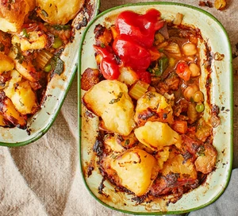

Vegan Shepherds Pie

Description
A warming vegan supper with porcini mushrooms, leeks, carrots, and butternut squash, topped with crispy potatoes. It's low calorie, low fat, and perfect for when the nights draw in
Serves 8 - Total cooking and prep time 1 hour and 50 minutes
s
Ingredients
- 1.2kg floury potatoes, such as Maris Piper or King Edward
- 50ml vegetable oil
- 30g dried porcini mushrooms, soaked in hot water for 15 mins, then drained (reserve the liquid)
- 2 large leeks, chopped
- 2 small onions, chopped
- 4 medium carrots (about 300g), cut into small cubes
- 1 vegetable stock cube (make sure it's vegan)
- 3 garlic cloves, crushed
- 2 tbsp tomato purée
- 2 tsp smoked paprika
- 1 small butternut squash, peeled and cut into small cubes
- ½ small pack marjoram or oregano, leaves picked and roughly chopped
- ½ small pack thyme, leaves picked
- ½ small pack sage, leaves picked and roughly chopped
- 4 celery sticks, chopped
- 400g can chickpeas
- 300g frozen peas
- 300g frozen spinach
- 20ml olive oil
- small pack flat-leaf parsley, chopped
Steps
- Put the unpeeled potatoes in a large saucepan, cover with water, bring to the boil and simmer for 40 mins until the skins start to split. Drain and leave to cool a little.
- Meanwhile, heat the vegetable oil in a large heavy-based sauté pan or flameproof casserole dish. Add the mushrooms, leeks , onions, carrots and the stock cube and cook gently for 5 mins , stirring every so often. If it starts to stick, reduce the heat and stir more frequently, scraping the bits from the bottom. The veg should be soft but not mushy.
- Add the garlic, tomato purée, paprika, squash and herbs. Stir and turn the heat up a bit, cook for 3 mins, add the celery, then stir and cook for a few more mins.
- Tip in the chickpeas along with the water in the can and reserved mushroom stock. Add the peas and spinach and stir well. Cook for 5 mins, stirring occasionally, then season, turn off and set aside. There should still be plenty of liquid and the veg should be bright and a little firm.
- Peel the potatoes and discard the skin. Mash 200g with a fork and stir into the veg. Break the rest of the potatoes into chunks, mix with the olive oil and parsley and season.
- Divide the filling into the pie dishes and top with the potatotes. Heat oven to 190C/170C fan/gas 5 and bake the pies for 40-45 mins, until the top is golden and the filling is heated through. If making individual pies, check after 20 mins. Best served with tomato ketchup – as all great shepherd’s pies are.
Back